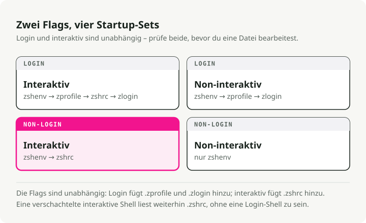
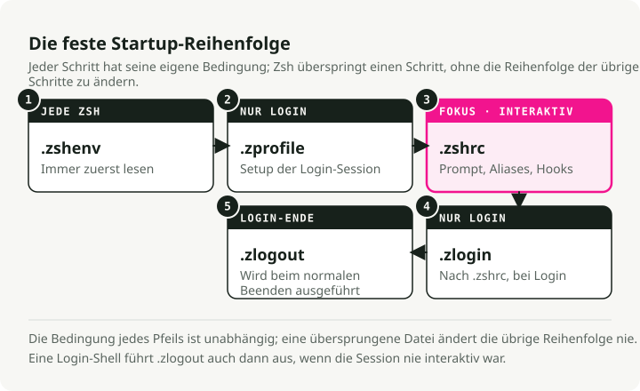

Automatische Übersetzung
Dieser Artikel wurde automatisch aus der englischen Originalversion übersetzt.
Zsh-Startdateien: ~/.zprofile vs. ~/.zshrc auf macOS und Linux
Wenn sich Ihr Terminal langsam anfühlt oder Ihre Umgebungsvariablen nicht dort geladen werden, wo Sie es erwarten, stoßen Sie wahrscheinlich auf die Startreihenfolge von Zsh.
Die Trennung zwischen ~/.zprofile und ~/.zshrc ist eine der häufigsten Ursachen für Verwirrung beim Wechsel zu Zsh, besonders auf macOS, wo sich die Standardvorgaben anders verhalten als unter Linux.
TL;DR
~/.zprofile ist für die Umgebungseinrichtung. Es wird einmal pro Login ausgeführt, was auf macOS einmal pro Terminal-Tab bedeutet. Platzieren Sie dort Ihr PATH, EDITOR und Versionsmanager wie fnm oder pyenv.
~/.zshrc ist für die interaktive Konfiguration. Es wird jedes Mal ausgeführt, wenn Sie eine neue Shell starten. Platzieren Sie dort Aliase, Prompt-Themes und Tastenbelegungen.

Der Shell-Startablauf
Um zu wissen, wo Dinge hingehören, müssen Sie wissen, wann Dateien geladen werden. Zsh hat dafür eine klare Hierarchie.
Login- vs. interaktive Shells
Eine Login-Shell ist die erste Shell, die Sie nach der Authentifizierung erhalten. Auf macOS ist standardmäßig jeder neue Terminal-Tab oder jedes neue Fenster eine Login-Shell. Unter Linux startet das Öffnen eines Terminals normalerweise stattdessen eine nicht-login interaktive Shell, und genau daraus entsteht der Großteil der plattformübergreifenden Verwirrung.
Eine interaktive Shell ist jede Shell, in die Sie Befehle eingeben können.
So läuft es tatsächlich ab, wenn Sie auf macOS ein Terminal öffnen:

Die Ladereihenfolge
~/.zshenv(optional). Wird für jede Shell ausgeführt, auch für nicht-interaktive Skripte. Platzieren Sie hier keine Ausgabe und keine aufwendige Logik — das kann Skripte beschädigen, die Ihre Konfiguration laden. Verwenden Sie es nur für Umgebungsvariablen, die wirklich überall existieren müssen; für die meisten ist das selten.~/.zprofile. Wird nur für Login-Shells ausgeführt. Ihre Setup-Phase.~/.zshrc. Wird für interaktive Shells ausgeführt. Ihre Anpassungsphase.~/.zlogin(optional). Wird ganz am Ende des Starts einer Login-Shell ausgeführt.
Was gehört wohin?
~/.zprofile: die Umgebungsschicht
Hier richten Sie die Dinge ein, die alle anderen Prozesse erben — Pfade, Variablen, Sprach-Versionsmanager.
Das gehört hier hinein:
PATH-Änderungen.- Umgebungsvariablen:
EDITOR,LANG,GOPATH,JAVA_HOME. - Tool-Initialisierung, die die Umgebung verändert:
pyenv,rbenv,fnm,cargo.
Diese Dinge müssen nur einmal berechnet werden. Wenn Sie sie in .zshrc ablegen, werden sie jedes Mal neu berechnet, wenn Sie eine Sub-Shell öffnen oder ein Skript ausführen. Das kostet Zeit und kann doppelte Einträge in Ihrem PATH hinterlassen.
# ~/.zprofile
# 1. Set up your PATH
# Local bin first so your tools override system ones
export PATH="$HOME/.local/bin:/opt/homebrew/bin:$PATH"
# 2. Global variables
export EDITOR="nvim"
export VISUAL="nvim"
export LANG="en_US.UTF-8"
# 3. Version managers (the heavy ones)
# Doing this here keeps shell startup fast
eval "$(fnm env --use-on-cd)"
eval "$(pyenv init -)"
~/.zshrc: die interaktive Schicht
Hier passen Sie die Shell an, in die Sie tatsächlich Befehle eingeben.
Das gehört hier hinein:
- Aliase:
alias g='git'. - Ihr Prompt: Starship, Powerlevel10k, Pure.
- Vervollständigungen:
compinit. - Tastenbelegungen:
bindkey. - Shell-Optionen:
setopt autocd,setopt histignorealldups.
Diese Dinge sind nur relevant, wenn ein Mensch an der Tastatur sitzt. Ein im Hintergrund laufendes Skript braucht weder Ihr Prompt noch Ihre git-Aliase.
# ~/.zshrc
# 1. Prompt
autoload -Uz promptinit && promptinit
prompt pure
# 2. Aliases
alias ll='ls -lah'
alias g='git'
alias gs='git status'
# 3. Shell options
setopt autocd # cd by typing the directory name
setopt histignorealldups # skip duplicate history entries
setopt share_history # share history across tabs
# 4. Completions
autoload -Uz compinit && compinit
Warum nicht alles in eine Datei packen?
Sie fragen sich vielleicht: Wenn .zprofile zuerst läuft, warum nicht einfach Ihre Aliase dort ablegen und .zshrc ganz überspringen?
Es läuft auf Vererbung vs. Neudefinition hinaus.
Umgebungsvariablen werden vererbt
Wenn Sie in einer Eltern-Shell export EDITOR="vim", erbt jeder Kindprozess es: Sub-Shells, Skripte, Programme. Sie setzen es einmal und es propagiert den Prozessbaum hinunter. Deshalb ist .zprofile der richtige Ort für export.
Aliase und Funktionen nicht
Aliase wie alias g='git' und Shell-Funktionen sind lokal für die aktuelle Shell. Sie werden nicht an Kind-Shells weitergegeben.
Wenn Sie einen Alias in .zprofile definieren, existiert er in Ihrer übergeordneten Login-Shell. In dem Moment, in dem Sie zsh eingeben, um eine Sub-Shell zu starten, oder ein Skript ausführen, ist dieser Alias verschwunden. Damit Aliase überall verfügbar sind, müssen Sie sie in jeder neuen interaktiven Shell erneut definieren. Genau dafür ist .zshrc da.
Skripte brauchen keine menschenbezogenen Features
Wenn Sie ein Shell-Skript ausführen (./deploy.sh), startet es eine neue nicht-interaktive Shell. Es braucht Ihr Prompt nicht, es braucht Ihre git-Aliase nicht, und es will ganz sicher nicht warten, bis oh-my-zsh fertig geladen ist. Wenn die interaktive Konfiguration in .zshrc bleibt, laufen Skripte schnell und sauber, ohne dass Ihre persönliche Anpassung hineinleakt.
Häufige Stolperfallen
nvm oder pyenv in .zshrc platzieren
Sie öffnen einen neuen Terminal-Tab, und es dauert zwei oder drei Sekunden, bis Sie etwas eingeben können. Versionsmanager haben meist eine aufwendige Initialisierung, und .zshrc läuft jedes einzelne Mal. Verschieben Sie sie nach ~/.zprofile, und die Verzögerung verschwindet.
Ein wachsendes PATH
In Ihrem $PATH stehen dieselben Verzeichnisse am Ende fünfmal. Die Ursache ist fast immer export PATH="$HOME/bin:$PATH" in .zshrc: Bei jedem Neuladen (source ~/.zshrc) oder in jeder Sub-Shell wird der Pfad erneut angehängt. Verschieben Sie PATH-Definitionen nach ~/.zprofile.
Nach Änderungen neu laden
Änderungen an ~/.zprofile gelten nicht für Ihre aktuelle Shell, weil .zprofile nur beim Login gelesen wird. Sie können entweder den Tab schließen und einen neuen öffnen (die einfachste Option) oder source ~/.zprofile manuell ausführen.
Für .zshrc genügt:
source ~/.zshrc
Eine Konfiguration, die auf macOS und Linux funktioniert
Wenn Sie zwischen mehreren Maschinen wechseln (macOS bei der Arbeit, Linux zu Hause oder umgekehrt), stoßen Sie auf eine Besonderheit. Linux-Terminals starten oft als Nicht-Login-Shells, was bedeutet, dass sie ~/.zprofile komplett überspringen.
Der übliche Workaround ist, .zprofile aus .zshrc zu laden, wenn es noch nicht geladen wurde:
# ~/.zshrc
# On Linux/non-login shells, make sure the environment is set
if [[ -o interactive && ! -o login ]]; then
[[ -f ~/.zprofile ]] && source ~/.zprofile
fi
# ... rest of your interactive config
Zusammenfassung
| Datei | Zweck | Beispiele |
|---|---|---|
~/.zshenv |
Kritische Umgebungsvariablen | ZDOTDIR (nur für fortgeschrittene Nutzer) |
~/.zprofile |
Umgebungseinrichtung | PATH, EDITOR, eval "$(pyenv init -)" |
~/.zshrc |
Interaktive Konfiguration | alias, prompt, bindkey, compinit |
Zwei Regeln decken das meiste ab. Variablen werden den Prozessbaum hinunter vererbt, daher gehört export in .zprofile. Aliase und Funktionen werden nicht vererbt, daher gehören sie in .zshrc und müssen für jede neue interaktive Shell neu definiert werden. Wenn sich neue Tabs langsam anfühlen, ist der Verursacher fast immer ein schwergewichtiges pyenv init oder nvm.sh, das in .zshrc statt in .zprofile liegt.